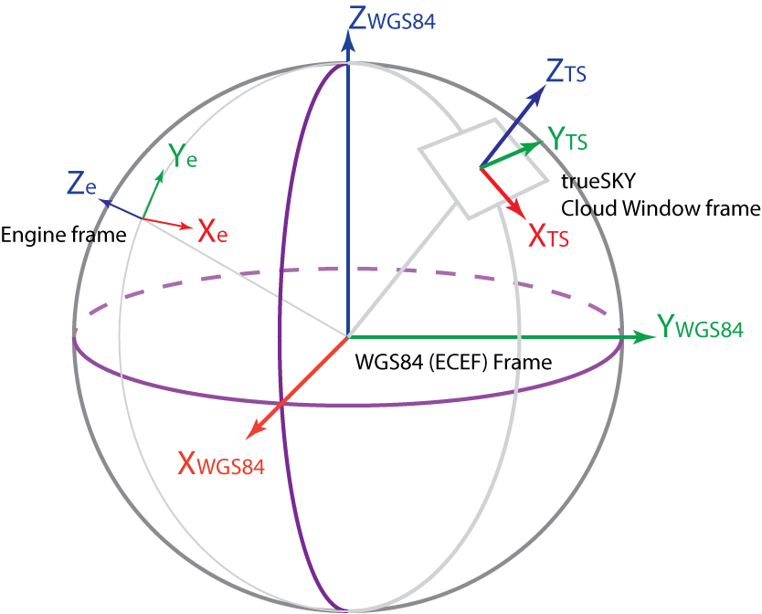

Concepts¶
Understanding these concepts will help you get the most out of trueSKY.
The Cloud Window¶
trueSKY creates and updates a “Cloud Window”, a 3D volume of cloud data which occupies an area of Earth’s atmosphere.
There are three frames of reference to understand. The WGS84 (ECEF) Frame (also sometimes called EPSG:4326) is a standard frame of reference for geographic applications (see `en.wikipedia.org/wiki/World_Geodetic_System#WGS_84<https://en.wikipedia.org/wiki/World_Geodetic_System#WGS_84>`_ or en.wikipedia.org/wiki/Geographic_coordinate_conversion <https://en.wikipedia.org/wiki/Geographic_coordinate_conversion>`_ ).
In this frame:
the Z axis points to the North Pole,
the X axis points to latitude and longitude zero, where the Equator meets the Greenwich Meridian, and
the Y axis points to 90 degrees East on the Equator.
So this is a right-handed system (curl the fingers of your right hand from X to Y, and your thumb will point to Z). Right-handed systems are standard in scientific and engineering applications.
WGS84 positions are usually expressed in km.
The Engine Frame is the frame you are rendering in. If you’re using Unreal or Unity, this is the frame of reference for general rendering in that engine. In Unity, the Y axis is local vertical (i.e. normal to the Earth’s surface), the axes are left-handed, and values are in metres. In Unreal, the Z axis is local vertical, but the coordinate system is again left-handed, and values are expressed in centimetres.
In many simulation applications, the engine origin will be located at a point on or above the Earth’s surface. In some cases, the origin may be at the centre of the Earth.
The trueSKY Frame or Cloud Window Frame is trueSKY’s internal frame, which defines the centre of the Cloud Window Volume. This region is a cuboid projected onto the Earth’s curved surface, typically 600km wide and 20km high.
In the trueSKY Frame:
The Z axis points up (local vertical),
the X and Y axes are arbitrarily oriented, and
values are expressed in metres unless otherwise specified.
When you call into trueSKY to render the atmosphere, you will be passing a view matrix in Engine coordinates. Internally, trueSKY translates this into WGS84, and then into its own frame. trueSKY will usually update the position and orientation of its frame automatically to ensure that rendering is accurate and that the rendered views are not too far from the centre of the Cloud Window.
You could be rendering a single view, in which case, we want the Cloud Window Frame to track that view. Or you could be rendering multiple views per frame, and the Cloud Window should try to follow all of them. The position we want the trueSKY Cloud Window to track is called the Desired Centre.
So trueSKY needs to know:
Where the Engine Frame is located in WGS84 coordinates.
Where the Desired Centre is located in Engine coordinates.
The Cloud Window will not follow the Desired Centre exactly, because it has other requirements to meet. Generally, the Cloud Window frame will change when the Desired Centre moves more than a whole grid-point away from the Cloud Window origin.
This can be controlled either from the game engine, or via the trueSKY API.